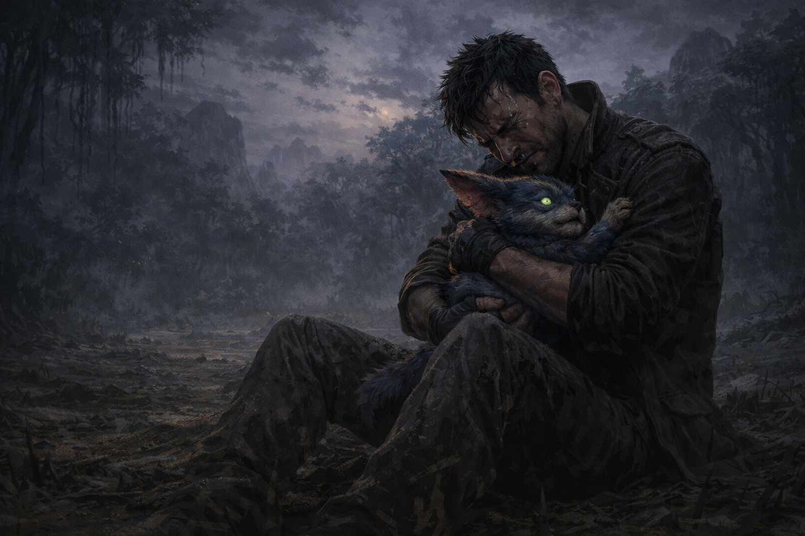

Tomé a KAWA y salí corriendo de allí. Sus advertencias habían sido suficientes. Algo dentro de mí todavía escuchaba a quienes me importaban, y eso significaba que aún había algo de Tony real que quedaba.
Corrimos hasta que el planeta se abrió en un claro amplio y silencioso. Me detuve exhausto y me senté en el suelo húmedo. KAWA se acurrucó en mi regazo y por primera vez desde que salí de nuestro planeta, lloré. Lloré por Elvira, por todo lo que sacrifiqué, por la criatura que maté, por la oscuridad que casi me consume.
No era un llanto de derrota. Era un llanto de alguien que todavía siente. Y sentir dolía, pero era infinitamente mejor que no sentir nada.
 Seguir adelante cargando el dolor